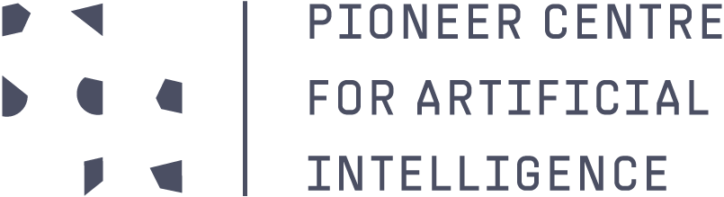
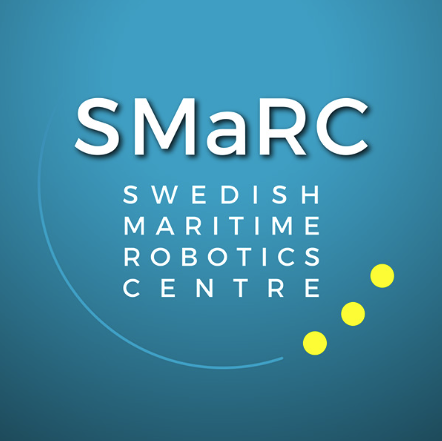
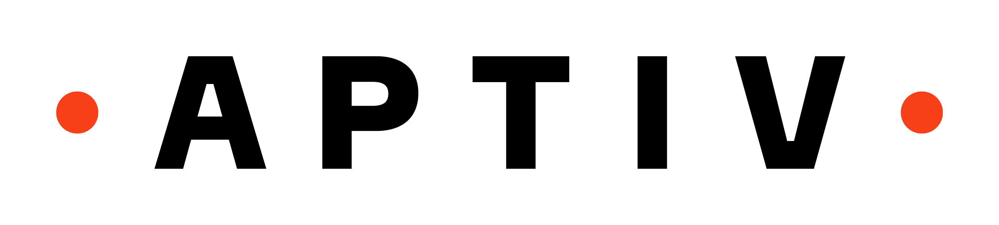

About Me
I am a PhD candidate at the Technical University of Denmark (DTU), affiliated with the Pioneer Centre for AI and the Belongie Lab, under the supervision of Professors Dim Papadopoulos and Serge Belongie.
Prior to joining DTU, I obtained my Master's degree from the KTH Royal Institute of Technology and my Bachelor's degree from the University of Genova. I have interned at Swedish Maritime Robotic Centre, Aptiv, and TU Delft.
Affiliations



Research
- Image Editing
- Diffusion Models
- Generative AI